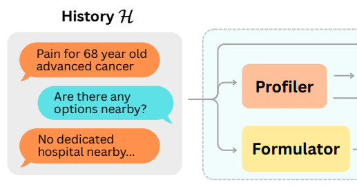
About
Hi, I’m Maxwell — a Senior AI Algorithms Engineer at NVIDIA. My work spans machine learning across language, vision, and multimodal systems. Previously, I was a Principal Engineer at HTC DeepQ, where I led engineers building production LLM systems for data extraction, clinical chatbots, and medical‑report understanding. Before that, I was a machine learning researcher in the Computational Imaging Lab at Sheba Medical Center (Newsweek top‑10 worldwide).
I hold an M.Sc. in Electrical & Electronic Engineering from Tel Aviv University, advised by Prof. Nahum Kiryati and Dr. Arnaldo Mayer. I’m currently pursuing a Ph.D. at National Taiwan University, focusing on multimodal learning for 3D spatial understanding.
Highlights
- 2nd place, 1st HTC Artificial Intelligence Hackathon (2023, 60+ business units competing)
- Spotlight presentations: MICCAI 2022, MIDL 2020
- [2018–2020] M.Sc., Tel Aviv University — GPA 90/100 (Accelerated Track)
- [2015–2019] B.Sc., Tel Aviv University — GPA 92/100 (Magna Cum Laude)
Timeline
-

Senior AI Algorithms Engineer — NVIDIA
-
Principal Engineer — HTC DeepQ
- Led development of production LLM systems for specialized text analysis, achieving higher accuracy (98%) than ChatGPT, 30× speedup, and 99% cost reduction.
- Developed a state‑of‑the‑art agentic chatbot framework that achieved a 53% gain in accuracy over ChatGPT‑5.2 on the OpenAI HealthBench Hard.
- Designed and deployed 3 agentic data integration tools powered by fully local LLMs, each surpassing a 95% accuracy.
- Architected a distributed system for document analysis, achieving 96.6% end‑to‑end accuracy on complex visual understanding tasks.
- Built and deployed 10+ local LLMs powering government and hospital chatbots, handling 2,000+ conversations per day.
- Led a team of engineers and interns exploring data‑extraction and information‑validation techniques.
- Partnered daily with full‑stack engineers, product managers, and clients to deliver production‑grade AI solutions.
-
Senior Engineer — HTC DeepQ
- In charge of Large Language Model (LLM) research & development (pre‑training, fine‑tuning, evaluation, and deployment).
- Owner of DeepQ AI Platform v2 (feature development and maintenance).
- Invented internal data cleaning tools for vision and language data management applications.
- Developed specialized CAD model for simultaneous lung nodule classification and localization.
-
Machine Learning Researcher — Sheba Medical Center
- Developed and piloted the first imaging‑based COVID‑19 lung CT screening system during the first wave of coronavirus.
- Built an automated knee MRI triage system, validated by the Head Radiologist of the MSK Department.
- Implemented bilingual text analytics to improve breast MRI report labeling efficiency, expanding 500 initial annotations into 7,000+ labeled reports.
Publications & Patents
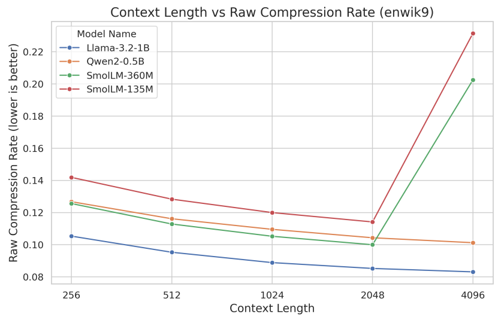
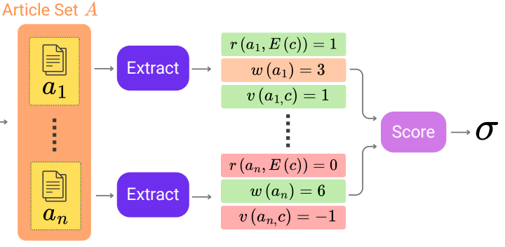
Exploring Health Misinformation Detection with Multi‑Agent Debate
WASP Workshop - IJCNLP-AACL, 2025
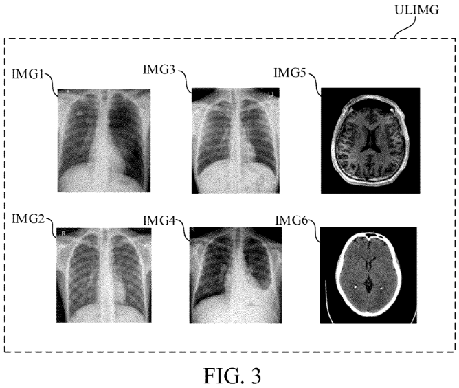
Data classification method for classifying inlier and outlier data
US Patent US12292919B2
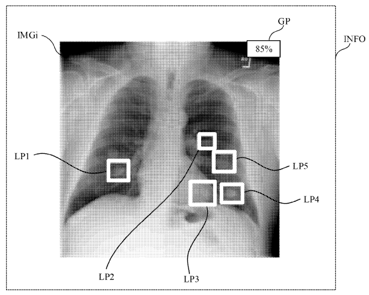
Medical image detection system, training method and medical analyzation method
US20230316511A1
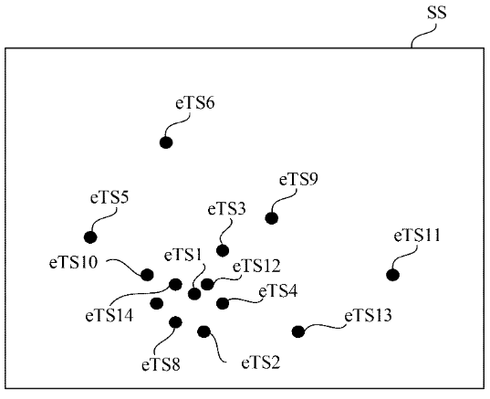
Data classification method for filtering outlier text data
US20250077552A1 (patent pending)
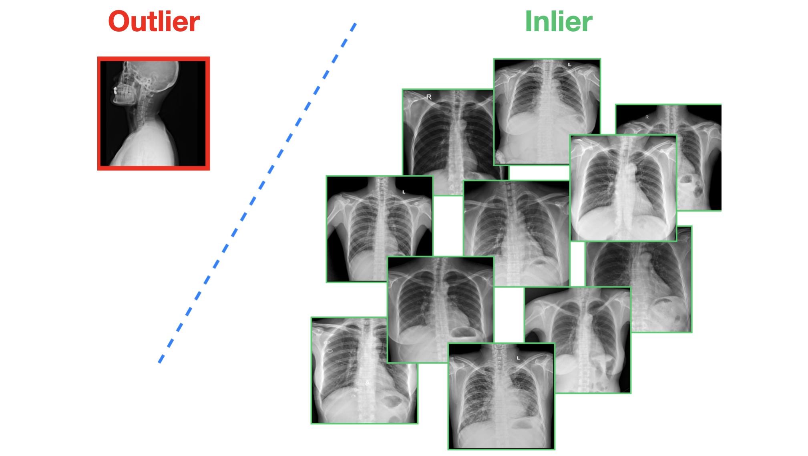
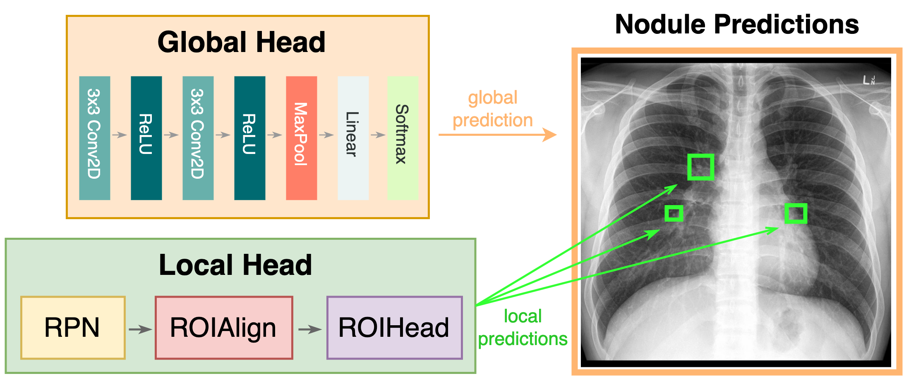
Automated Knee Injury Detection and Localization using 3D MRI Images
Master’s Thesis - Tel Aviv University, 2020
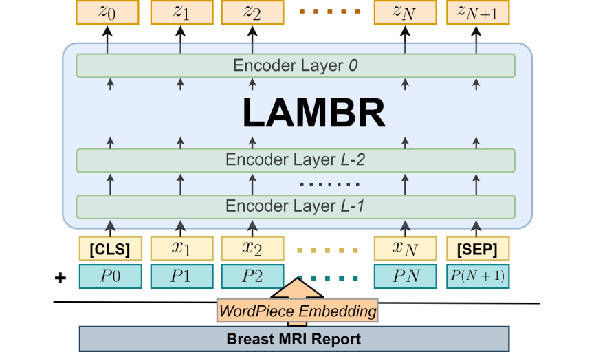
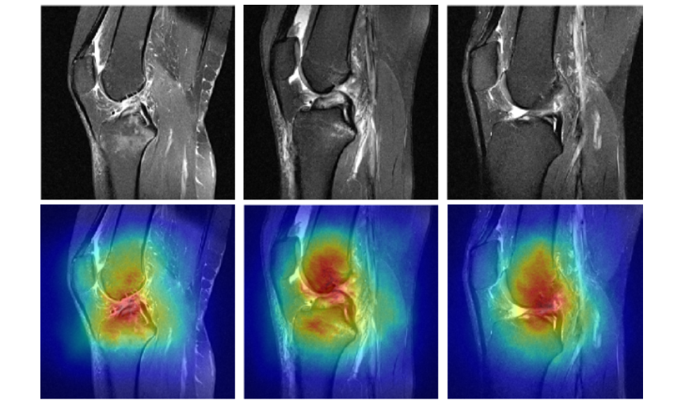
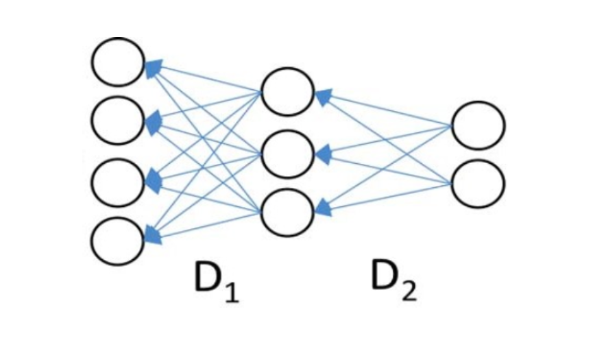
What is Flash Attention?
April 18th, 2026
Understanding AWQ Quantization
April 10th, 2026